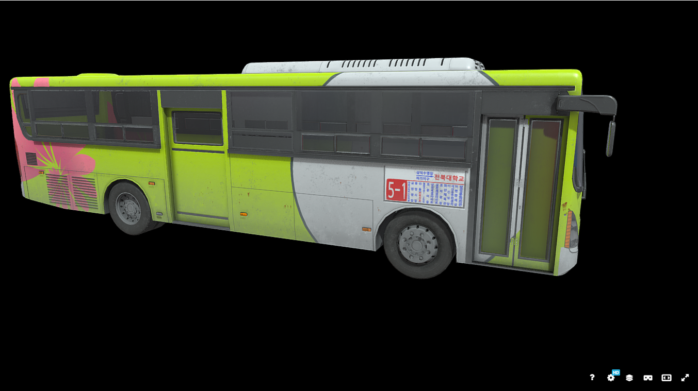

소개
학기말, 게임 개발 동아리 1학년이던 저에게 한 소식이 들려옵니다. 곧 게임 하나를 만들어 제출해야 하는 교내 대회가 열린다는 소식이었죠.
그 정체는 '전공실기'라는, 동아리별로 한 달 정도 작업한 작품을 발표하는 대회였습니다. 사실 그때쯤 유니티가 너무 어려워 흥미가 조금 식었지만, 대회 소식을 듣고 의욕이 다시 샘솟았습니다.
그렇게 만든 것이 Stygian Road입니다. 사실 Stygian Road의 정식 명칭은 괴현상대책부 - 삼도천입니다. itch.io가 다 영어라서, 혹시라도 누군가 봐주길 바라는 마음에 영어로 바꿔놓았죠.
하지만 퀄리티가 낮아서 아쉽게도 다운로드는 0만이 저를 반겨주고 있었습니다. itch.io에서는 아쉬웠지만, 다행히 전공실기에서는 금상을 받을 수 있었습니다. 사실 3학년 선배들은 참여하지 않았고, 참가자도 많지 않았기에 가능한 일이었죠.
초기 기획
처음에는 회사원이던 주인공이 정신을 차리고 보니 삼도천을 건너고 있는 버스 뒷좌석에서 깨어난다는 게임이었습니다. 주인공의 목표는 버스 안에서 알맞은 수칙을 지키며 여러 이상현상을 견디고 현실로 돌아가는 것이었습니다.
마침 좋은 모델도 찾았기에 바로 다운로드하고 Unity 프로젝트를 만들었습니다.
기획 변경 이유
호기롭게 모델을 불러왔고, 색감도 좋아 보여 개발 의욕이 샘솟았습니다. 하지만 치명적인 문제가 있었습니다.
버스 내부는 비어있었습니다.
생각해보니 버스 외부는 보이지 않아 외부에 집착할 필요는 없었지만, 다른 멀쩡한 버스를 찾다가 결국 자동차 모델로 바꾸게 되었습니다. 그 후, 수칙들을 작성하기 시작했습니다. 수칙들은 평소 나폴리탄을 보며 작업했던 느낌을 최대한 살리려 노력했습니다.
개발 중 있었던 문제들
솔직히 말하면, 모든 것이 문제였지만 저의 영원한 파트너인 Chat GPT의 도움으로 겨우 만들어낼 수 있었습니다. 하지만 제가 만든 엉터리 로직을 Chat GPT가 겨우겨우 살린 것이기 때문에, 다시 보니 코드가 정말 엉망이었습니다.
빌드 완성 후 발견한 문제들
1. 수칙서 부분이 너무 길고 가독성이 떨어짐
개발하는 동안은 중간중간 수칙서를 확인할 수 없었기에, 앞부분에서 정독할 시간을 주고 원하는 때 시작할 수 있게 만들자고 생각했습니다.
하지만 예상치 못한 문제가 있었습니다. 당시 저는 캔버스 기능을 잘 몰랐기에 제 컴퓨터에서는 UI 위치가 정상적이었지만, 학교 PC에서는 글자가 깨지거나 번져 가독성이 심각하게 떨어졌습니다.
2. 과도한 기획으로 인한 난이도 조절 실패
개발 단계에서 게임에 콘텐츠가 부족하기보다는 최대한 많이 넣는 것이 좋아 보여 무작정 수칙들을 추가했습니다.
하지만 앞서 언급한 수칙서의 가독성 문제와 분량 때문에, 유저가 미리 알아야 할 정보가 너무 많아졌습니다. 결국 친구들은 감으로 게임을 시작했고, 아무도 클리어하지 못했습니다.
느낀 점
첫 프로젝트인 만큼 부족한 점이 많았지만, 그래도 완성했다는 것 자체에 의의를 두고 싶습니다.